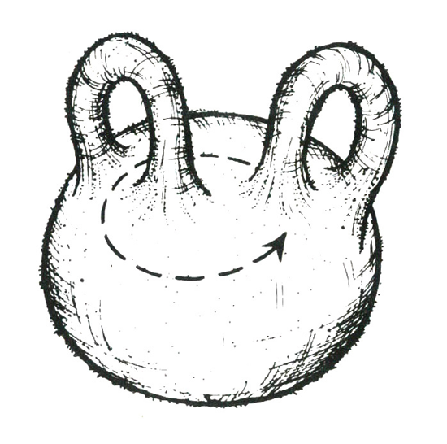

1
Dr. Ziege doğuya gittiğinde kutbun etrafında iki defa dolaşmasını sağlayacak ölçüde güney kutbuna yakın bir noktadan yola başlamış olabilirdi. Tabii bu da güney kutbu etrafında, n pozitif tamsayı için n-defa tur atmayı gerektirecek doğu yönlü yolculuklara genelleştirilebilir ki böylece problem sonsuz sayıda çember üzerinde sonsuz sayıda noktayla çözülür.
NOT
Bu bulmacanın daha tanıdık bir arka plan hikâyesiyle anlatımında güneye doğru 100 yarda ileride bir ayı gören bir kâşiften bahsedilir. Kâşif yerinden kımıldamazken ayı 100 yarda doğuya yürür. Kâşif tüfeğini güneye doğrultur, ateş eder ve ayıyı vurur. Ayının rengi nedir?
Ayının rengi beyazdır. Ayı, bir kutup ayısı ve mekân Kuzey Kutbu’dur ama bulmacamızda öğrendiğimiz üzere adam Güney Kutbu’na yakın bir yerde duruyor da olabilir. Benjamin Schwartz, “Ayı ne renkti?” başlıklı yazısında (Matematik Dergisi, 1960, Sayı 34, Sf. 1 – 4), problemin anlatısındaki belirsizlikten kaynaklanan sonsuz sayıda fazladan yanıt bulunduğunu belirtmiştir. Bu sonuçları ve bazı eğlenceli yazışmaları Mathematical Carnival adlı çalışmamın 17. Bölümü’nde ele aldım.
Peki, 124C41+ tanıdık gelmiş miydi? Bilimkurgu tarihçileri, bilimsel öngörülerinde şaşırtıcı ölçüde tutarlı çıkmakla birlikte yayınlanmış en berbat bilimkurgu romanlarından sayılan Ralph 124C41+ adlı eserden aldığımı hemen fark etmişlerdir. Söz konusu romanın yazarı, bilimkurgunun babası kabul edilen Hugo Gernsback’ti. Gernsback, dünyadaki ilk tümüyle bilimkurgu işleyen dergi Amazing Stories’i yayınlayan kişidir ve her yıl bilimkurgu yazarlarına verilen “Hugo” ödülleri Gernsback’in adını ölümsüzleştirmiştir. Romanın sonunda süper kahraman Ralph biricik aşkına, soyadının “Sizler için geleceğe bakan” anlamına geldiğini açıklar.
2
Dr. Ksenofon iki çift eldiveni birden giyer. 1A ve 2B yüzeylerine virüs bulaşabilirken 1B ve 2A steril kalır.
Dr. Upsilon ikinci çifti giyer; steril 2A yüzeyleri ellerine gelir.
Dr. Zeno ilk çifti tersyüz eder ve steril 1B yüzeyleri ellerine gelecek şekilde giyer. Ardından ikinci çifti, 2A yüzeyleri 1A yüzeylerine temas edecek ve 2B yüzeyleri en dışta kalacak şekilde giyer.
Üç ameliyatta da sadece 2B yüzeyleri Bayan Hooker’a temas edeceklerinden, üç cerrahtan da Barsoom gribi kapma riski ortadan kalkar.
NOT
Bildiğim kadarıyla uzun süre sadece matematikçiler arasında kalan bu eğlenceli problem ilk defa yayınlanıyor. Kökeni bilinmeyen orijinal problemde bir kombinatorik1 konferansına katılan üç matematikçi vardır. Birlikte geceleyin bir fahişeye giderler. Kadınınkinin yanı sıra birbirlerinin sağlık durumlarından da emin değildirler. Ellerindeyse sadece iki kondom bulunmaktadır. Korunmak için bu iki kondomu nasıl kullanmaları gerekir?
1) Kabaca: “Moskova ile St. Petersburg arasında Otomatik Tahrikli Demiryolu Sistemi.” (ç.n.)
Problem daha sonra, gene bilinmeyen birisi tarafından, kadını korumayı da içerecek şekilde genişletilmiş, sonunda mümkün tüm erkek-kadın eşleşmelerine göre birleşen n sayıda erkek ve m sayıda kadına genellenmiştir. Herkese koruma sağlayacak asgari prezervatif sayısı kaçtır? Bu genel problem çözülebildi mi, bilmiyorum.
1977 yılında Yale Üniversitesi’nden bilgisayar bilimci Richard Lipton ve aynı sırada ondan bağımsız iki Macar matematikçi, A. Hajnal ve L. Lovasz tarafından kısmi bir çözüm bulunmuştur. Hajnal ve Lovasz makalelerine, “Bir Takım Hastalıkların Yayılmalarını Asgari Bedelle Önleme Amaçlı Bir Algoritma” başlığını seçmişlerdi. Özetlerinde şunları söylüyorlardı:
“Her biri ayrı bir hastalık taşıyan n sayıda Tavşan (T1……..Tn) ve farklı radyoaktif izotoplar bulaştırılmış m sayıda levha (L1…….Lm) varsayarak her tavşanı her levha üzerine koyup nm sayıda deney yapmayı düşündük. Koruyucu zarlar tavşanların birbirlerine veya levhalara hastalık bulaştırmalarını ve izotopların bir diğer levhaya veya hayvana bulaşmalarını engelleyecektir. Her deneyde levha üzerine, tavşanın altına koymak üzere istediğimiz sayıda zar serebiliriz. Bir zar birden fazla defa kullanılabilir ancak hastalıklı bir yüzey bir diğer yüzeye, hayvana veya levhaya değerse hastalık taşınmış olacaktır. Sorun toplam kullanılan zar sayısını asgaride tutabilmek için deney ve zar kullanımını düzenlemektir. Kendimizi n = m = 6k durumuyla sınırlayarak 7k + 1 zar kullanan bir algoritma sunuyor ve her algoritmanın en az 7k zar gereksindiğini kanıtlıyoruz.”
3
1 ve 4 dışında hem karesel hem dörtyüzlüsel olan tek sayı 1402 = 19.600’dür. Bu sayı, dörtyüzlüsel sayıların kırk sekizincisidir.
NOT
Eğer n tane birim-küre düzlem üzerinde düzgün bir çokgen oluşturacak şekilde düzenlenebiliyorlarsa n’ye çokgensel sayı adı verilir. Uzayda düzgün bir çokyüzlü oluşturacak şekilde düzenlenebiliyorlarsa n, çokyüzlü sayı adını alır. Genelde, eğer n birim-küre makul simetriye sahip herhangi bir düzlemsel veya hacimsel biçim oluşturuyorsa, n “biçimli sayı” adını alır. Eski Yunanlar biçimli sayılara bayılırlardı ve daha sonraki çağlarda sayılar kuramıyla uğraşanlar bu tür sayılarla ilgili binlerce Diyofantus problemi üzerinde çalışmışlardır.
Bizim uzay bilardosu problemiyse sadece üç çeşit biçimli sayıyla ilgili: üçgensel, karesel ve dörtyüzlüsel. Gelin bir tane daha ekleyelim; adına “kare-piramitsel” diyelim çünkü küreleri Mısır Piramitleri misali kare tabanlı bir piramit şeklinde düzenlemek mümkündür. Bu dört sayı tipinden bir ikili seçmenin altı farklı yolu vardır. Her birinde kaç sayının her iki anlamda da biçimli olduklarını sorarız. Karesel ve dörtyüzlüsel problemin 1967’de çözülmesiyle altı çiftin tümü için çözümler neredeyse tamamlanmıştır. 10, 120, 1540 ve 7140 sayıları uzun süredir bilinen sayılardı ama 1967’de kanıt yayınlanan kadar başkalarının olmadığı bilinmiyordu (Avanesu adlı bir Rus tarafından bulunan kanıt Rusça yazılı Acta Arithmetica’nın 12. sayısında, 1967’de yayınlandı).
Altı çift hakkında (her birinde aşikâr biçimli sayı kabul edildiği için 1’i dışarıda bırakarak) bilinenler şunlardır:
1) Üçgensel ve karesel: 36’dan başlayıp 1225, 41616… şeklinde giden sonsuz bir sekans.
2) Üçgensel ve dörtyüzlüsel: 10, 120, 1540, 7140.
3) Karesel ve dörtyüzlüsel: 4, 19600.
4) Karesel ve kare-piramitsel: 4900.
5) Dörtyüzlüsel ve kare-piramitsel: Yok. Bildiğim kadarıyla bu durum Raphael Finkelstein tarafından, American Mathematical Monthly, sayı 73, Mayıs 1966’da yayınlanan “On a Diophantine Equation with No Nontrivial Integral Solution” başlıklı makalesiyle kanıtlanmıştır.
6) Üçgensel ve kare-piramitsel: Richard Guy, Louis Joel Mordell’in Diophantine Equations adlı eserinin 255. sayfasında bu problem için gerekli denklem tipinin sonlu sayıda çözümü bulunduğunu belirttiğinde dikkatimi çekmişti. Bilinen üç sayı: 55, 91 ve 208335.
Diyofantus denklemiyse şöyle:
m (m + 1) = r (r + 1) (2r + 1)
2 2
Burada soldaki üçgensel sayılar için formül, sağdakiyse kare-piramitsel sayılar için formüldür. Denklem şöyle sadeleşir:
3m2 + 3m = 2r2 + 3r2 + r
Aşikâr m = 1, r = 1 dışındaki bilinen sonuçlar m = 10, 13 ve 645, r = 5, 6 ve 85’tir. Guy, başkası olmadığı görüşünde.
Aralarında en yeni ve en iyisi olan, yukarıda bahsettiğimiz Mordell’in kitabının da bulunduğu çok geniş bir Diyofantin analizleri edebiyatı mevcut. Çözülememiş Diyofantin problemlerinin en ünlüsü, an +bn = cn denkleminin n’in 2’den büyük olduğu hiçbir tamsayı değeri için çözümü bulunmadığını söyleyen Fermat’ın “son teorem”idir.
4
Bin yıllık dönem içindeki anne sayısını n kabul edelim.
n x 1 = n sayıda çocuk ilk doğan,
n x 2/3 = 2n/3 sayıda çocuk ikinci doğan,
n x 2/3 x 2/3 = 4n/9 sayıda çocuk üçüncü doğan,
n x 2/3 x 2/3 x 2/3 = 8n/27 sayıda çocuk dördüncü doğan olacak ve böyle devam edecektir.
Toplam çocuk sayısıysa şöyle olacaktır:
n + 2n/3 + 4n/9 + 8n/27 + …
Buradaki toplamın limiti 3n’dir. Anne sayısı n olduğundan anne başına ortalama çocuk sayısı 3n/n = 3’tür.
Ancak yakınsak dizilerle uğraşmaya gerek yok. Hesap işini hepten devre dışı bırakacak basit bir çözüm geliyor mu aklınıza acaba?
5
Altı kutudan sırayla 11, 17, 20, 22, 23 ve 24 doyl alın. Bu altı sayının her altkümesinin farklı toplamı vardır ve bu durum, tek tartışta hatalı kutuların tespitini kolaylaştırır. Örneğin, diyelim ki tartıda 53 miligramlık fazladan ağırlık çıktı. Farklı sayılardan kurulu altılı bir setin toplamı olarak 53’ü elde etmenin tek yolu 11 + 20 + 22’dir. Bu da bize bir, üç ve dört numaralı kutularda hatalı doylların bulunduğunu gösterir.
NOT
Sherl ve Wats, Arthur Conan Doyle’un Sherlock Holmes ve Dr. Watson karakterlerinin parodileri elbette. IASFM okurlarından Herb Monroe çözümleri geliştirmeye yönelik bazı önerilerde bulundu. Derginin Ekim 1978 sayısında yayınlanan mektubundan aktarıyorum: “İlk çözümde Sherl kutulardan 0, 1, 2, 3, 4 ve 5 doyl alarak da hatalı doylları tespit edebilirdi. En büyük sorun, ikilinin kendilerine fazla iş çıkarmaları ya da değerli doylları atmış olmaları lazım. Üçüncü çözümde bütün bir doyl kutusunu (hatalı veya hatasız) atmak veya kusursuz doylları harcamamak için asgari 93 doylu tekrar istiflemek zorundalar… Bence uzun vadede her kutudan birer doyl alıp ayrı ayrı tartarlarsa daha iyi ederler; daha az iş çıkar…”
6
7 Saat yanıtını bulmak için 49’u 7’ye bölerseniz sıfır puan alırsınız. Bir mikrop, bir saatte 7 mikroba dönüşüyordu. O noktadan itibarense sekans öncekiyle aynıdır. Haliyle kabın 1/7’si 49 – 1 = 48 saatte dolacaktır.
Sıra üçüncü soruda: Diyelim ki Dr. Moreau III boş kaba 2 mikrop koymuş olsun. Kabın en az 1/7’si bu durumda kaç saatte dolar?
7
Ling sağ elini sol eliyle sıkıp öne eğilerek gülümsemişti.
Çin usulü kendi kendine el sıkışma, el sıkışma teoremine sahiden bir karşı-örnektir ama ilgili grafiksel teoreme karşı-örnek değildir. Neden dersiniz?
8
Teğmen şöyle akıl yürütmüştü: “Yüzbaşının, doğru parçasının uzunluğu belliyken halkanın alanı sabittir demesine inanıyorum. Dediği doğruysa iç dairenin büyüklüğünün hiç önemi yok demektir. İç daireyi asgariye, yarıçapı sıfır olan bir noktaya indirdik diyelim. Bu durumda doğru parçası dış dairenin çapı, halka da dairenin kendisi olur. Haliyle alanı da pi çarpı yarıçapının karesidir.”
“Yani,” dedi Teğmen, “tek yapmam gereken pi sayısını 10.000.000.000 ile çarpmaktı. Bu da kolaydı çünkü bütün olay pi sayısındaki ondalık virgülünü on hane sağa kaydırmaktan ibaretti.”
“Harika!” dedi Yüzbaşı. “İyi de, pi sayısını on dört haneye dek nasıl hatırlayabiliyorsun?”
Teğmen Flarp komutanına kızıl martini kadehini uzattı, ardından kendi kadehini kaldırdı: “Nasıl susamışım! E, onca sayfa kuantum mekaniğinden sonra kuruyor tabii insan!”
Teğmen Flarp pi sayısının on dört hanesini birden nasıl hatırlayabilmişti dersiniz?
9
İki Siyam formu topolojik açıdan birbirinin aynıdır. Bunu kanıtlamak için formun aşağıdaki şekilde görülen iki “kulplu” bir küreye dönüştürüldüğünü hayal edin.

Şimdi ön cephedeki yüzeyin büzülüp arka tarafın genişletilerek kulplardan birinin ok yönünde hareket ettirildiğini hayal edin. Bu hareket iki kulpu birbirinin içinden geçirmiş olur. Yapı böylece kolaylıkla Siyamlı toroitlerin formuyla ilintilenecek şekilde değiştirilebilmektedir.
NOT
David Klonefake’teki ihamımı David Rorvik’ten aldım. Klonlama üzerine eseri In His Image, 1970’lerde yayınlanan sahte-biyoloji kitaplarının en fecisiydi.
10
İçlerinden biri, ikisi ya da üçü seçilerek 1’den 70’e her türlü toplamın elde edilebileceği yedi posta pulu için yedi değerlik tek seri şudur:
1, 4, 5, 15, 18, 27, 34.
NOT
Genelleştirilmiş posta pulu problemine dair iyi bir referansı Ronald Alter’ın American Mathematical Monthly’nin 1980 Mart sayısında yayınlanmış “Bir Posta Pulu Problemi”nde bulabilirsiniz. Makalenin bibliyografyasında kırk yedi geçmiş referans listelenmişti.
Genelleştirilmiş derken kastım şu: n pul için öyle n tane değer bulun ki bu pullardan en fazla m tanesi kullanılarak 1’den mümkün olan en büyük k değerine kadar bütün toplam değerler elde edilebilsin. Genel problem çözülmemişliğini sürdürüyor.
12
Düzlem geometrisinden bildik bir teorem, bir dairenin içine dik açıyı belirleyen köşesi çember üzerinde bir dik üçgen çizildiğinde, işbu dik açının iki kenarının çemberi, çapın geçtiği noktalardan kesmesi gerekeceğini söyler. Bu durumda 5 ve 12 kilometrelik mesafeler dik üçgenin iki kenarı demektir. Pisagor teoremini uyguladığımızda 52 + 122 = 132 sonucunu buluruz. Dolayısıyla kraterin çapı 13 kilometredir.
13
Pembe’nin ilk cümlesini mavi elli birisi yanıtlamıştı; dolayısıyla Profesör Pembe, mavi tenli değildi. Pembe tenli de olamazdı çünkü gene ilk cümlesinde söylediği gibi, hiçbirisinin ten rengiyle soyadı aynı değildi. Dolayısıyla Profesör Pembe, yeşil tenliydi.
Mavi elli profesörse mavi veya pembe olamayacağından Profesör Yeşil’di.
Haliyle pembe tenli kişi Profesör Mavi’ydi.
14
Soldaki robota şu soru sorulur: “Ortadaki robotun yalancı veya sağdaki robotun doğrucu olduğu doğru mu?” Aşağıdaki tabloda altı permütasyon için mümkün yanıtları görüyoruz:
Sol Orta Sağ Evet Hayır
1 D Y B X
2 D B Y X
3 Y D B X
4 Y B D X
5 B D Y X X
6 B Y D X X
Tabloda görebileceğiniz üzere, robotun evet demesi halinde ortadaki robotun ya doğrucu ya yalancı olması gerekir. Robot hayır derse, sağdaki robot doğrucu veya yalancı demektir.
Yanıt evetse ortadaki robota şu soru sorulur: “Sana kolyeli hanım en yaşlısı mıdır, diye sorsaydım evet mi derdin?” Kolyeli kızın en yaşlıları olduğunu varsayalım. Doğrucu da, yalancı da evet, diyecektir! (Yalancı sorunun ilk kısmına hayır yanıtı vereceğinden yalan söylemek ve sorunun tümüne evet demek zorundadır.) Aynı mantıkla gidersek, eğer kolyeli kız en yaşlıları değilse hem doğrucu hem yalancı hayır diyecektir. Dolayısıyla ikinci soru, kolyeli kızın en yaşlıları olup olmadığını kavramaya yeterlidir.
Soldaki robot ilk soruya hayır yanıtı verirse, sağdaki robot ya doğrucu ya da yalancı demektir. Bu durumda ikinci soru bu robota sorulur ve aynı sonuç alınır.
“İlk sorunuza daha iyi bir çözüm geldi aklıma,” dedi İzomorf. “Üç kızın da kimliklerini, nasıl oturduklarına bakılmaksızın sadece iki soruyla öğrenebilirim.”
Neydi acaba düşündüğü?
15
Bu oyun, Henry E. Dudeney’nin Amusement in Mathematics adlı eserinin 392. probleminde “Çakıl taşı Oyunu” adını verdiği oyunun eşeyidir. Söz konusu oyunda bir masaya on beş çakıl taşı konur. Oyuncular sıraları geldiğinde 1, 2 veya 3 taş alma hakkına sahiptir. Tüm taşlar toplandıktan sonra tek sayıda taş almış oyuncu kazanır.
İzomorfizmi görmek kolay: İki başlangıç noktasını saymazsak tahta üzerinde on beş nokta var. Oyuncuların ilerleyişi, iki taş arasında kalan mesafeden 1, 2 veya 3 taş almakla aynı yere çıkıyor. İki taş karşı karşıya geldiklerinde tüm noktalar (çakıl taşları) bitmiş ve taşı çember içindeki noktada duran oyuncu tek sayıda noktayı “almış” oluyor.
Oyun, tek sayı olmak şartıyla herhangi miktar taşa ve bu taşların içinden a’dan b’ye kadar (a ile b pozitif tam sayılar olmak ve b’nin a’dan büyük ya da a’ya eşit olması kaydıyla) herhangi sayıda taş almaya genellenebilir.
Peki, oyun neden çift sayıda taşa genellenemez?
16
Kitaplardaki gibi dergilerde de çift sayılar sol, tek sayılar sağ sayfa numaralarıdır. Dolayısıyla 27 ve 28. sayfalar aynı yaprağa aittir. Eksik sayfa sayısı beştir.
Birkaç gün sonra şikâyet amacıyla gittiğimde dükkânı bulamadım. Oysa birbirine yapışık iki evin bulunduğu noktadaydı; yemin edebilirdim. Çekim geri geldiğinde “Raymond Dero Palmer” adıyla ciro edildiğini gördüm.
NOT
Yetersiz veri yüzünden çözülmesi imkânsız görünen ilk problemi Danimarkalı Soren Hammer Jacobsen hazırlamıştı. İznini alarak ilk defa bu bulmacada yayınladım.
Raymond Dero Palmer, 1977’de hayatını kaybeden bilimkurgu yazar ve editörü Raymond A. Plamer’dı. Yeraltında yaşayan kötücül derolarla ilgili ünlü asparagasının onuruna ikinci adını Dero yaptım. Palmer kırklı yıllarda Amazing Stories’in editörlüğünü yaparken Richard Shaver eliyle deroların kurgusal değil gerçek olduklarını anlatan bir dizi haber ve makale yayınlamış, binlerce okur bunları ciddiye almıştı.
Palmer uçan daire çılgınlığının başlamasında başrol oynayanlardandı. Ayrıca yarı-bilimsel ve paranormal konularda hiçbir değer taşımayan sayısız haber ve makale ile paranormal zırvalara dair reklâmlar yayınlamaya devam eden Fate dergisini de kurmuştu.
17
Couth imkânsızlık kanıtında şeklin bir düzlem üzerine çizildiğinin varsayıldığını söylemeyi unutmuştu. Matematik zekâsı epey yüksek Tanya, şeklin, bir torus üzerine, beş doğru parçasıyla çevrili bölmelerden birinin orta deliği içerecek şekilde çizilmesi durumunda kanıtın çökeceğini fark etti. Mesela şekil şöyle çizilseydi kolayca çözüme ulaşılıyordu:
Couth kızının geniş görüşlülüğüne bayıldı. Derhal bir problem daha verdi. “Uzay gemimiz,” dedi, “mesela torus yerine bir küre olsaydı, bu şekil orijinal problemin çözülebileceği şekilde kürenin içine çizilebilir miydi?”
Tanya’nın bunda da zorlanmadığını söylemeye gerek var mı?
18
Bir arkadaşınıza şöyle deyin: “Soruma karşılık söyleyeceğin sözcük ‘hayır’ mı olacak? Lütfen ‘evet’ veya ‘hayır’ diye yanıtla.”
NOT
Kırmızı-yeşil ışıklı bilgisayarlı öngörme paradoksunu ilk kim düşündü bilmiyorum. Çözümü bundan daha zor başka iki öngörme paradoksunu 20 ve 29. bulmacalarda verdim.
Charles Blabbage elbette programlanabilir bilgisayarlar alanına öncülük etmiş İngiliz matematikçi, filozof ve mühendis Charles Babbage’dı (1791–1871). Yakın dostu ve öğrencisi genç ve güzel, varlıklı, zeki, matematikçi Lovelace kontesi Ada Augusta (1815–1852) ise şair Lord Byron’ın tek yasal çocuğuydu. Ada Augusta bilgisayarların sadece kendilerine söyleneni yapacağını söyleyen ilk kişiydi. Vladimir Nabokov’un Ada adlı romanının karakteri, kısmen Leydi Lovelace’i temel almıştır.
19
Bir deste iskambildeki 26 siyah kartı ayırıp desteleyerek masaya koyun. Yanına, mesela 13 kırmızılık ikinci bir deste yerleştirin. Arkanızı dönün ve arkadaşınıza siyah kart destesinden istediği kadar kart alıp kırmızı desteye karıştırmasını, ardından az evvel tümü kırmızı olan desteden aynı sayıda kart alıp siyah desteye karıştırmasını söyleyin.
Dönün, parmaklarınızı şakaklarınıza götürerek gizli güçlerinizin size siyah kartlar arasındaki kırmızı kart sayısının, kırmızılar arasındaki siyahlara eşit olduğunu söylediğini açıklayın.
Martini problemindeki durumun aynısı burada da geçerlidir. İsterseniz izleyenlerden birisine iki desteyi karıştırmasını, ardından bir desteyi 26, diğerini 13 kart gelecek şekilde ayırmasını söyleyin. Sonuç değişmeyecektir.
Şimdi geri gidin ve bu bulmacanın ilk kısmını bir kez daha okuyun. Kont Drakula’nın kokteyl karıştırmasının anlatılmasında hangi feci hata yapılmıştı acaba?
20
Philbert’a Perşembe sabahı, o günün öğleden sonrasında silineceği bildirildi. Perşembe gününü bilmesi mümkün olmadığından şaşakaldı ve Perşembe günü silindi. Yargıcın dediği her şey tutarlı çıktı.
NOT
Bu, modern felsefede bilinen en bela öngörü paradokslarındandır (diğer ikisi bulmaca 18 ve 29’da). Paradoksla ilgili daha kapsamlı bir tartışmayı ve üzerine yazılmış yirmi üç makaleyi The Unexpected Hanging adlı çalışmamın birinci bölümüne aldım. Kitabımın 1969’daki yayınlanışından bu yana konu üzerine bir düzineyi aşkın ayrı çalışma yayınlandı.
21
Kare matris soldan sağa ve yukarıdan aşağı alındığında DNA mesajı aşağıdaki gibi çıkıyordu:
C harflerinin bulunduğu kareler karalandığında AI harflerinin çıktığını görüyoruz.
“Çok daha ilginç!” dedi Crock. “Ne demek bu AI? Yapay zekâmı? Eğer öyleyse, virüsün robotlar tarafından yapılıp buraya yollandığı mesajını mı veriyor? İyi de İngiliz alfabesini nereden bilecekler?”
“Aklıma geldi de,” dedi Witson. “Soldan sağa tarama kültürel bir tavırdan öte değil aslında… İki harf de aynasal simetriye sahip. Matrise sağdan sola bakarsak şu çıkıyor.” Witson çarçabuk matrisi çizdi ve C harflerinin karelerini karaladı.
“E, IA ne peki?” dedi Crock. “Isaac Asimov mu?”
İki bilgin günlerce uğraşıp sekansta başka ipuçları aradılar. 2x18, 3x12 ve 4x9 matrislerini denediler, farklı yönlerden baktılar ama başka herhangi bir düzen veya matris bulamadılar. Ama gizem birkaç hafta sonra ortaya çıktı. Neydi dersiniz?
22
Öncekindeki gibi, bu soru da cebirle zorlu yoldan çözülebilir. “Aha!” çözümüyse işin içine aşağıda görüldüğü gibi bir eşkenar üçgen daha eklemekten geçiyor.
Küçük üçgenin alanının büyüğünkinin dörtte biri olduğunu derhal göreceksiniz. Küçük daire ve içindeki üçgen, büyük daire ve üçgeninin ufaltılmasından ibaret olduklarından, dairelerin üçgenlerle aynı oranda ufalmış olmaları gerekir. Dolayısıyla küçük dairenin alanı, büyüğünkinin dörtte biridir.
Peki, diyelim ki söz konusu şekil aşağıdaki gibi elips ve ikizkenar üçgenlerden kurlu olsaydı, iki üçgenin alanlarının oranı ne olurdu?
23
Dr. Loveface geçmişe zaman yolculuğuyla ilgili, bir kimsenin kendi geçmişine gidip ebeveynini bebekken öldürmesi halinde varlığının silinip silinmeyeceği konusuna eğilmiş eski bilimkurgu öyküleri okumuştu. Buradaki numara, gelecekten gelen herhangi bir unsurun geçmişe, geçmişi değiştirecek şekilde girdiği anda evrenin birinde değişimin yer aldığı diğerinde almadığı, birbiriyle aynı iki paralel evrene bölünmesidir.
Aynı numara takyon mesajlarına da uygulanabilir. Mesaj evrenin geçmişine girdiği anda büyük bölünme meydana gelir. Böyle bir mesajı yollayan kişi, mesajın alındığı kopya evrende değil, yollandığı evrende yaşadığından yanıtı asla alamayacaktır. Bu durum çelişkisiz tek yönlü iletişime izin verirken aynı evren içindeki takyon mesaj alışverişine izin vermez.
NOT
Takyon telefonu zaman yolculuğu paradokslarıyla yakından ilintilidir. Bu paradokslara dair tartışmayı, telefon dâhil, 1974 Mayıs’ında Scientific American’daki köşeme almıştım. Takyon teorisine harika bir giriş için Gerald Feinberg’ün 1970 Şubat’ında Scientific American’da yayınlanmış “Işıktan Hızlı Giden Parçacıklar” başlıklı makalesini önerebilirim. Bazı parapsikologlar Takyonların (eğer varlarsa) önceden sezmeci ESP (öyle bir şey varsa) taşıyıcıları olabileceğini öne sürmüşlerdir.
25
Böyle bir sekans yoktur ve bu, daha önce kullanılan aynı inşa izleğiyle kolayca kanıtlanabilir.
1 3 9…
2 6…
4 9…
5…
Bu noktada karşımıza 9’un kaçınılmaz tekrarı çıkacaktır.
Henüz kanıtlanmamış olmakla birlikte Hofstadter’ın orijinal garip sekansı daha fazla farklı sıraya genellenemeyecekmiş gibi görünmektedir. California’dan bir IASFM okuru, David J. Bell, her sıranın ilk sayısının artan sekanslı olması kuralından vazgeçmemiz durumunda garip sekansların genelleştirilebileceğini belirtmiştir.
Peki, Bagel’ın bilgisayarının neden VOZ adını taşıdığını bulabilecek misiniz bakalım?
26
Bahis gene Şeytan’dan yana. Toplardan biri bir yive düştüğünde diğerinin aynı yive düşme olasılığı 1/1.444 değil, 1/38’dir. Topların ayrı yivlere düşme olasılığı 1’e 37 olduğundan, 1’e 100 bahsi uzun vadede Şeytan’a önemli bir avantaj sağlayacaktır.
Bahisteki avantajına rağmen Şeytan kaybettiğinde feci öfkelendi ve tüm psi enerjisini kullanarak, öğrenciye o gece oynayacağı tüm bahisleri kaybetmesine yol açacak bir lanet okudu. Ardından iç çekerek uyumak üzere Cehennem’e geri döndü.
Öğrencinin kız arkadaşı Suzie, neredeyse Şeytan kadar psişikti. Yabancının sınırlı psişik güçlerini fark etmekle kalmamış, okuduğu laneti de hemen sezmişti. Ve lanetten çok hoşlanmıştı. Neden acaba?
27
Yelkovan, akrepten on iki kat hızlı ilerler. 11. bulmacada öğrendiğimiz üzere, ikili on iki saatlik dilim içinde on bir defa üst üste gelirler. Dolayısıyla karşılaşmalar arasındaki süre 12/11 veya 65 tam ve 5/11 dakikadır ki bu da 65 dakika, 27 tam ve 3/11 saniye demektir. Sorunun yanıtı, saat 12’den sonra ikilinin tamı tamına 1’i 5 dakika, 27 tam ve 3/11 saniye geçe üst üste gelecekleridir.
Ay mekiklerine dönelim. Her biri saatte 20.000 millik sabit hızla ilerliyordu. Yalnız bir trajedi yaşandı ve aksi yönden ilerleyen iki mekik birbirlerinden tam 83.000 mil uzaktayken, mekiklerden birinin radar sistemi bozuldu ve mekikler çarpışma rotasına girdiler. Çarpışmalarından on beş dakika önce aralarındaki mesafe neydi dersiniz?
28
Uzmanlar tek yanıtta anlaşamıyor. Bazıları “faydacı argümandan” (sadece saydamsız kutuyu almak) bazılarıysa “mantıklı argümandan” (iki kutuyu da almak) yana. Bazıları paradoksun henüz çözülemediğini söylüyor. Kimileriyse bu paradoksun yüzde ellinin üzerinde başarıyla çalışabilen öngörü makinelerinin imkânsızlığını kanıtladığı görüşünde.
Bu problem, 1960’larda ortaya atan Amerikalı fizikçi William A. Newcomb’un onuruna “Newcomb paradoksu” adıyla bilinmektedir. Zonick adıysa Zonick’in anagramı: Harvard’lı filozof Robert Nozick bu paradoks üzerine yazan ilk kişidir ve Scientific American’ın matematik oyunları bölümüne bu konuda konuk yazar olarak katkıda bulunmuştur. Nozick köşesinde, daha önce bahsettiğim için paradoksun çözümüyle uğraşmış Isaac Asimov’unki dâhil, okurlardan gelen binlerce mektubu işlemiştir.
30
Devekuşunu andıran genç, görevliye n numaralı odalarda bulunan herkesi 2n numaralı odalara aktarmasını salık vermişti. 1 numaralı odadaki müşteri 2 numaraya, 2’deki 4’e, 3’teki 6’ya, vesaire diye gidecek, böylece tek sayılı odalar boşalmış olacaktı. Tek sayılı odalar sonsuz tane olduklarından bilimkurgu hayranları kolayca otele yerleştirilebilecekti.
NOT
Alef-sıfırla (tüm pozitif tam sayılar kümesinin sayısı) ilgili paradokslar ve Kantor’un daha yüksek alefleri hakkında bilgi edinmek için Edward kanser ile James Newman’ın yazdıkları Mathematics and Imagination’ın ikinci bölümü iyi bir başlangıç sunmaktadır.
32
“54,” dedi Sıfır. “Sıfır hariç tüm rakamları içeren bölenlerse 1, 2, 3, 54, 6, 27, 18 ve 9. Bölenleri on rakamın onunu da barındıran en küçük sayıysa 108, yani 54’ün iki katı… Gösterimizi başyapıtımızla noktalıyoruz.” Elini kaldırdı, “Erdös!” diye bağırdı ve birden elinde koskocaman bir parşömen rulo belirdi. Açarak yere serdiği parşömende şu şekil çiziliydi:
Sıfır, “Her dairenin içine,” diye devam etti, “on rakamdan birini yerleştirmen gerekiyor. On rakam da kullanılmak zorunda. ‘Daha ufak’ rakamlar ‘daha büyüklerin’ altına gelecek ama daha ufak ve büyükten ne kastettiğimi açıklamayacağım. Çizgiler her rakamın ilintilendiği daha ufak rakamla arasındaki ikili ilişkiyi simgeliyor.”
“Bu diyagramı hayatta aklımda tutamam,” dedim uykumda. “O halde,” dedi Sıfır, “sende kalsın.”
Zıpladı, bir parende attı ve el çırparak yere indi. On rakam birden zümrüt yeşili bir duman içinde yitti. Uyandım, başucu lambamı yaktım. Parşömen yerde duruyordu. Açtığımda rakamların yeşil mürekkeple uygun yerlere yerleştirildiğini gördüm. Ne anlama geliyordu bu diyagram dersiniz?
33
Resimde görüldüğü gibi R noktasında kesişen iki dış teğet çizin. Dünya ve Ay hem K hem R noktalarında aynı boyda görüneceklerdir. R ve K noktalarının bulunduğu büyük çemberse Ay ile Dünya’nın her daim aynı büyüklükte görüneceği yörüngedir. Bir başka deyişle Yunanca ‘fi’ harfiyle belirlenmiş açı çifti, bu çember üzerindeki herhangi bir P noktasında birbirinin aynı olacaktır. Buna “benzerlik çemberi” adı verilir. Düzlem geometrisi kitaplarında ayrıntılı bilgi bulabilirsiniz.
Peki, Dünya’dan bakıldığında Ay ile Güneş’in neredeyse aynı büyüklükte görünmelerinin nedenini merak ettiniz mi hiç? Güneş tutulmalarında Ay diskinin Güneş diskini neredeyse tamamen örtmesi bu yüzdendir. Nedeni geliyor mu aklınıza acaba?